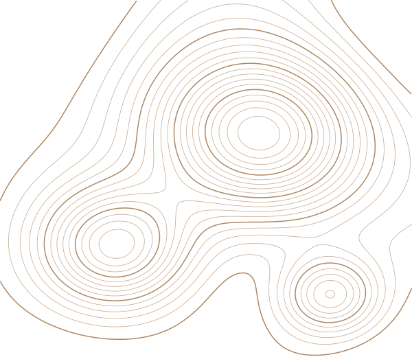

Sheet 1 of 7
Kavya Agrawal
PhD scholar in groundwater, remote sensing and machine learning
I study where groundwater becomes unsafe to drink, and why. My doctoral research at the TERI School of Advanced Studies, New Delhi, builds national-scale models that predict uranium, fluoride and arsenic contamination across India from satellite, climate, terrain and hydrochemical data, then turns those predictions into maps of risk, exposure and governance priority.
I trained as a geographer and still think in maps. Before groundwater I worked on land surface temperature trends in the Indus River Basin, permafrost and snow cover, and urban land use in Delhi.
Supervised by Prof. Chander Kumar Singh, co-supervised by Dr. Adwitiya Sinha.
kavya.agrawal@terisas.ac.in Google Scholar ORCID ResearchGate LinkedIn GitHub


News
- Jun 2026
Teaching Principles of Remote Sensing (NRG169) and Principles of GIS and GNSS (NRG176) in the MSc Geoinformatics programme, July–December 2026.
- Apr 2026
First Position (oral presentation) and Best Paper Award at ICSSR EHP NEXUS 2026, Gautam Buddha University, for work on machine-learning-based uranium risk assessment.
- Mar 2026
Rapporteur at the National Workshop on Geospatial Technology for Climate Action, Sustainability and Disaster Risk Reduction (TERI SAS with NRSC, ISRO).
- Feb 2026
Delegate at the World Sustainable Development Summit 2026, Silver Jubilee edition.
- Jan 2026
Completed the PhD comprehensive examination. Submitted the paper Predicting Uranium Occurrences in Groundwater throughout India.